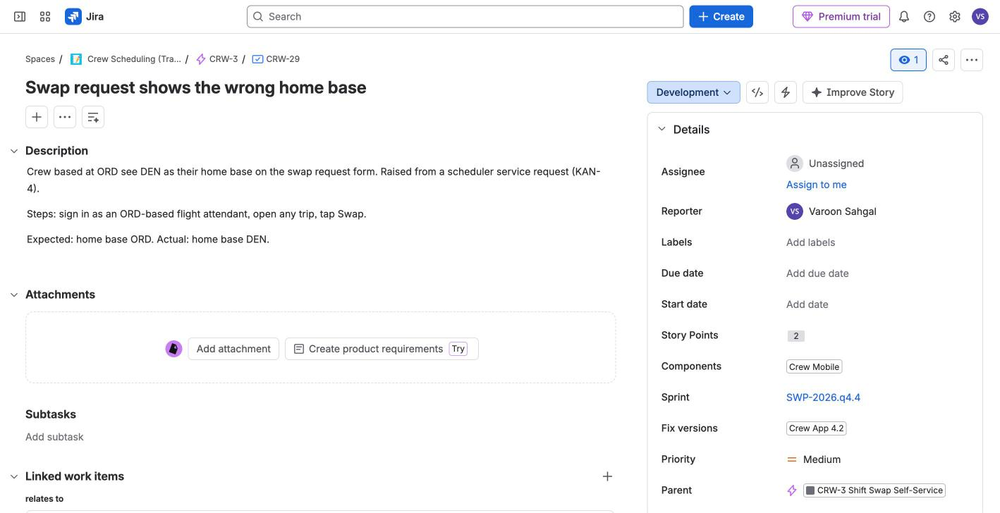

Module 4 of 8 · Session 1 · Reconcile the delivery evidence
Evaluate release quality in Zephyr
A 93% pass rate sounds like a release. Then you ask which acceptance criteria those passes actually prove, and the answer gets a lot more interesting.
40 min20 min practiceLab: Find the risk behind the pass rate
Objective
Use coverage and execution history to explain a release risk and the next test action.
Requirement-to-case coverage
Cycle scope for a release or build
Failed, blocked and unexecuted tests
Linked defects
Regression selection
Retest history
Quality review (eQE)
Product Owner acceptance
UAT evidence
Approved completion point
M4.1 Coverage is a mapping, not a percentage
Zephyr organizes test evidence in four layers. You need all four to say anything about release quality:
Requirementa Jira Story and its acceptance criteria→Test casesteps and expected results, linked to the requirement→Test cyclethe cases chosen for a release or build→ExecutionPass, Fail, Blocked, Not Executed or In Progress, plus linked defects
A pass rate is calculated inside one cycle: passed executions divided by executions. It says nothing about the requirements that never made it into the cycle. Coverage asks the opposite question: for each acceptance criterion, is there a linked test case, is it in the release's cycle, and what is its latest result?
Question
Pass rate answers it?
Coverage answers it?
How many of the tests we ran passed?
Yes
Partly
Does every acceptance criterion have a test?
No
Yes
Which criteria have no executed evidence on this build?
No
Yes
Is a failure still open, and is it linked to a Bug?
No
Yes, with execution history
A cycle built from the regression library can score 93% and still never touch the criteria that matter for this release. A smaller cycle built from the release's acceptance criteria will usually look worse, because it includes the hard cases. Judge the release on the second kind.
Cycle scope is a decisionName each cycle after what it proves: the release or build it covers and the requirement set it was built from. "Regression · build 1.9.3" and "Release readiness · swap-approved path · build 1.9.4" tell a reviewer what each pass rate can and can't support.
M4.2 Failures, blocks and the retest trail
Each execution status carries a different message for the release decision:
Status
What it means
What to do with it
Pass
The expected result was observed on this build.
Evidence, but only for this build. A later change to the same code can invalidate it.
Fail
The actual result differed. A defect should be linked.
Trace to the Bug. The criterion is unproven until a retest passes on a build that contains the fix.
Blocked
The test couldn't run: an environment, data or dependency problem.
Name the blocker. A blocked test is missing evidence, not a soft pass.
Not Executed
Planned but never run.
Missing evidence. Ask why and when it will run.
In Progress
Started, not finished.
Treat as missing until it has a result.
Zephyr keeps every execution, so a test case has a history: the build, the date, the result, the comment and any linked defects. The latest execution is the current state of that evidence. The history tells you whether a fix has been retested at all.
The live training site has the Jira side of one such trail. Bug CRW-62 ↗, "Swap-approved email shows the wrong home base", is High priority, in Development, 2 points, in sprint ALR-2026.q4.4. Its description says it was found by test execution of the swap-approved email case. The Bug is still in Development, so no retest on a fixed build can exist yet.
The symptom isn't new. Story CRW-29 describes the same wrong-home-base behaviour on the swap request form:
…atlassian.net/browse/CRW-29

CRW-29: "Crew based at ORD see DEN as their home base on the swap request form." Same symptom family as Bug CRW-62. When a fix to home-base lookup lands, a regression selection that only reruns the email test would miss this path.
Regression selection after a change
Rerunning the whole library after every fix is slow and teaches people to ignore results. Rerunning only the failed test misses side effects. Choose by what the change touches:
The test that failed and is linked to the Bug.
Every other test that exercises the same code path or data (here: anything that displays or converts by home base).
Any check for a sibling defect with the same symptom, even if it belongs to another team's work.
Not the unrelated cases. Unsubscribe links and retry policies don't read the home base.
Blocked by a dependency, not by the testerCRW-58 ↗ "Test swap-approved notifications end to end" is blocked by CRW-22 ↗, the swap eligibility engine, which sits in eQE Testing. An end-to-end test that depends on it can't produce evidence until CRW-22 clears quality review. Say that in the decision instead of letting the Blocked count disappear into a percentage.
issue in linkedIssues(CRW-22, "blocks")
M4.3 Who signs the completion point
The Crew Delivery Workflow separates three kinds of approval. Each leaves different evidence:
Ready for eQE→eQE Testing→PO Review→Ready for Release→Done
Quality review (eQE)
Embedded quality engineering runs the cycle and links defects. Evidence: executions and linked Bugs.
PO acceptance
The Product Owner checks the result against the acceptance criteria. Evidence: the transition out of PO Review and a comment naming what was accepted.
UAT evidence
Business users confirm it works for them, where the release requires it. Evidence: a UAT cycle or signed record.
The approved completion point is the status at which your organization says the work is complete for a given purpose. Module 3 showed why it matters: the ALR board counts Ready for Release as done. CRW-54 ↗, "SMS template for swap approved", was counted in ALR's 19 completed points and is still in Ready for Release. In the replica below you'll see whether its acceptance criteria are actually proven.
Proceed, hold or clarify
Call
Use it when
Must include
Proceed
Every release criterion has a current passing execution, or an accepted and recorded exception.
The cycle, the build and who accepted any exception.
Hold
A known failure, or missing evidence for a criterion that matters, would reach users.
The precise evidence that releases the hold, and who produces it.
Clarify
The gap is a question, not a known failure: scope, definition, or who accepts a criterion.
The exact question, who answers it, and the decision each answer leads to.
Precise missing evidence"More testing needed" isn't a hold condition. "A Pass for CRW-T16 on a build containing the CRW-62 fix" is. A reviewer should be able to tell, from your sentence alone, when the hold is over.
M4.4 Zephyr practice replica
Practice replicaZephyr isn't installed on the training site yet. This replica uses the same CRW records (Bug CRW-62, stories CRW-50, CRW-54, CRW-58, CRW-29, Risk CRW-71, CRW-22 in eQE Testing) so you can do the same analysis. The test cases (CRW-T…), the acceptance criteria list, the cycles, builds and execution results are replica fixtures, not data on the site. When the app is installed, repeat the analysis in Jira.
Scope under review: the swap-approved notification path that crew see when a self-service swap is approved: push, SMS and email. Seven acceptance criteria (AC1–AC7) define it.
Zephyr · Crew Scheduling (Training) · Test cycles and traceabilityPRACTICE REPLICA
Requirement coverage · swap-approved path
Count evidence from:
Supplied change (replica): the fix for CRW-62 changes how the crew member's home base is looked up. It now comes from the crew profile instead of the first trip's departure station. The same lookup feeds the swap-approved email, the SMS report-time conversion and the swap request form. Build 1.9.5 will contain it.
Tick the test cases to rerun on build 1.9.5 because of this change. CRW-T31 is in the library but in neither cycle.
What precise evidence would change or release your call? Tick all that apply.
Instructor demo · 8 min
Open Cycle 1 in the replica (or the real cycle if Zephyr is installed). Read out the pass rate: 13 of 14, 93%. Ask the room: "Ship it?"
Open Traceability with "Cycle 1 only". Three criteria (AC3, AC4, AC7) have no test in the cycle. The 93% says nothing about them.
Switch to Cycle 2, the one built from the acceptance criteria. Every criterion has a case, and the pass rate drops to 4 of 7. Point at CRW-T15 Not Executed and CRW-T19 Blocked.
Open CRW-T16's execution history: failed on build 1.9.3, retested on 1.9.4, failed again, linked to CRW-62. Open CRW-62 ↗ in Jira: High, still in Development.
Open CRW-58 ↗: blocked by CRW-22, which is in eQE Testing on the SWP board ↗. That's why CRW-T19 is Blocked.
Open CRW-29 ↗: the same ORD-shows-DEN symptom on the swap request form. Ask what the regression selection after the home-base fix should include.
Model the format: "Hold the swap-approved path. Released when: …" with each condition precise enough to check.
LAB M4 · 20 MIN · CRW READ-ONLY · REPLICA + YOUR SEAT
Find the risk behind the pass rate
Turbulence
Brief The release review asks QA for "a quality number" on the swap-approved notification path. Someone has already pasted "93% pass". Find what that number hides, choose the retests after the supplied fix, and give a proceed, hold or clarify call with the precise missing evidence. CRW is read-only: open CRW-62, CRW-29, CRW-54, CRW-58, CRW-22 and CRW-71 to check facts, but don't edit, transition, comment, link or flag. The analysis runs in the replica. If you want to record your call in Jira, comment on your own seat epic only.
Find the coverage gap and the unresolved executions (7 min).
In the replica, open Cycle 1. Note the pass rate and which requirements its cases are linked to.
Open Traceability with "Cycle 1 only". List the acceptance criteria with no test in that cycle.
Switch to "Both cycles". Find the criterion that still has no executed evidence anywhere, and the executions that are unresolved (failed or blocked). Open each one's history.
Open Risk CRW-71 ↗ in Jira. Its ROAM treatment is Mitigated. Ask yourself what evidence that mitigation rests on.
Trace the Bug and choose the retests (7 min).
Open CRW-T16's history in Cycle 2 and follow the link to CRW-62 ↗. Record its status, priority and sprint.
Open CRW-29 ↗ and compare the symptom. Treat a shared root cause as a hypothesis to confirm with the developer, not a fact.
In Retest selection, read the supplied change, tick the cases to rerun on build 1.9.5, and check your selection. Send it to your evidence.
Make the call (6 min).
In Decision, choose proceed, hold or clarify and tick the precise evidence that would release or change your call. Check it.
Complete your evidence card. Each missing item names a test case, a build or a Jira key.
Optional: add your call as a comment on your seat epic , starting with L{SEAT} · M4 quality call:.
key in (CRW-22, CRW-29, CRW-54, CRW-58, CRW-62, CRW-71) ORDER BY key ASC
project = CRW AND issuetype = Bug AND statusCategory != Done ORDER BY key ASC
project = CRW AND text ~ "home base" ORDER BY key ASC
Debrief: what a strong answer looks like
Coverage finding. Cycle 1's 93% (13 of 14) never tests AC3 (report time in home-base local time), AC4 (no personal data beyond first name in the SMS) or AC7 (end to end). Across both cycles, AC4 has no executed evidence: its only case, CRW-T15, is Not Executed in Cycle 2. Risk CRW-71 "Crew personal data in SMS notifications" is marked Mitigated, but no executed test supports that.
Unresolved executions. CRW-T16 (AC5, email) failed on 1.9.3 and again on its retest on 1.9.4; it's linked to Bug CRW-62, which is High and still in Development. CRW-T19 (AC7, end to end) is Blocked because CRW-58 is blocked by CRW-22, still in eQE Testing. CRW-T15 is Not Executed.
Targeted retest. On the build with the fix: CRW-T16 (the failure), CRW-T14 (SMS report time converts by home base; its Pass on 1.9.4 predates the change) and CRW-T31 (swap request form home base, the CRW-29 symptom). Run CRW-T15 too, but because it was never executed, not because of the change. Unsubscribe, retry, rate-limit and audit cases don't touch the home-base lookup.
Recommendation.Hold the swap-approved notification path. It's released when: CRW-T16 passes on a build containing the CRW-62 fix; CRW-T14 and CRW-T31 pass on that same build; CRW-T15 has an executed result for AC4, reviewed by the CRW-71 risk owner; CRW-T19 runs once CRW-22 clears eQE Testing; and the Product Owner accepts the result. Add a clarify if the release scope is unclear: if the email channel isn't in this release, say so in writing and the AC5 condition moves to the next release, but AC4 and AC7 still apply. "Proceed" isn't supported: a High defect is failing in the path users will see.
Cross-check with Module 3. CRW-54, the SMS template, sits in ALR's 19 "completed" points. One of its criteria (AC4) has no executed evidence. A board that counts Ready for Release as done can call work complete before quality evidence exists.
Learner output · Module 4
A coverage finding, a targeted retest choice and a release-quality recommendation.
+450 mi
Checkpoint
1. Cycle 1 passed 13 of 14 executions. What does that tell you about AC4 (no personal data beyond first name in the SMS)?
A pass rate only describes the executions in its cycle. Coverage asks which criteria have linked, executed tests. A criterion without a test has no evidence, good or bad.
2. CRW-T15 is Not Executed in the release-readiness cycle. How should it appear in your recommendation?
Not Executed is neither good nor bad news. It's missing evidence. Name it precisely so someone can close the gap.
3. The CRW-62 fix changes how home base is looked up for email, SMS time conversion and the swap request form. Which retest set fits best?
Select by what the change touches: the failed test, the other tests on the same lookup, and the sibling symptom (CRW-29). Unsubscribe and retry don't read the home base, and rerunning everything hides the signal.
4. Risk CRW-71 "Crew personal data in SMS notifications" is marked Mitigated. The only test for the related criterion was never executed. What do you say?
A ROAM value is a statement. Evidence is an execution result. CRW is read-only in class, and changing a risk treatment is the risk owner's decision anyway.
5. When is "clarify" the right call rather than "hold"?
Clarify names a question, who answers it and what each answer means. A known failing High defect is a hold condition. If the scope is also unclear, you can say both.